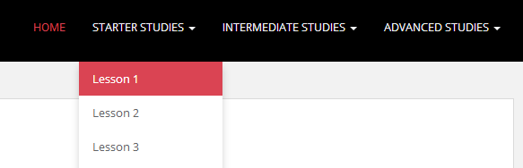

PianoNanny.com has acquired “Piano on the Net” — the original free online piano and music lesson course, established online in February of 1994. Piano on the Net has won many awards and has been featured on the NBC Nightly News (June 1998), CNN (October 1997) and in WebMaster (now CIO) Magazine (August 1997).
This excellent educational site is a free public service brought to you by PianoNanny.com (Piano Nanny) and The Art Department. We hope you find it useful. If you have questions about this site, please contact us. You are welcome to link to this website, however, please use this image when linking.
“I took a general music GCSE at school aged 16, and ended up totally lost and bewildered with the theory. I never really got started trying to learn piano and have always regretted it. On a total whim whilst Christmas shopping, I bought myself a Yamaha keyboard with the intention to try again and I am so glad I did and that I found pianonanny. In the space of a few days I have worked my way through the beginner class and can honestly say I have learned more in these few days than in 2 years at school.
I tried a few different sites before I found pianonanny and after a few simple lessons they all invariably wanted money to continue. I have found pianonanny to be a much better learning tool than any of them. What a pleasure to find a site that really wants to help you. The lessons are explained very well, with the audio clips a great help. Congratulations on an excellent site and thank you. I have found a new pleasure in life and I am extremely grateful to you.
Best Wishes,
Craig Wilson.”
Your instructor for the course is award-winning film composer and Jazz musician Clinton S. Clark. Clinton is member of ASCAP and The Society of Composers & Lyricists. To listen to compositions written by your instructor, please click or tap here.
When you are ready to proceed, go to the top of this page and under the “Starter Studies” drop-down menu select “Lesson 1.” See figure one below. This will present you with a list of all the pages in Lesson 1. Select “Starter Studies – Lesson One: Page 1” to begin. Each lesson takes about 35 minutes to complete. However, work slowly and at your own pace. It’s important to learn each lesson before moving on to the next.
figure 1
{kind=link}